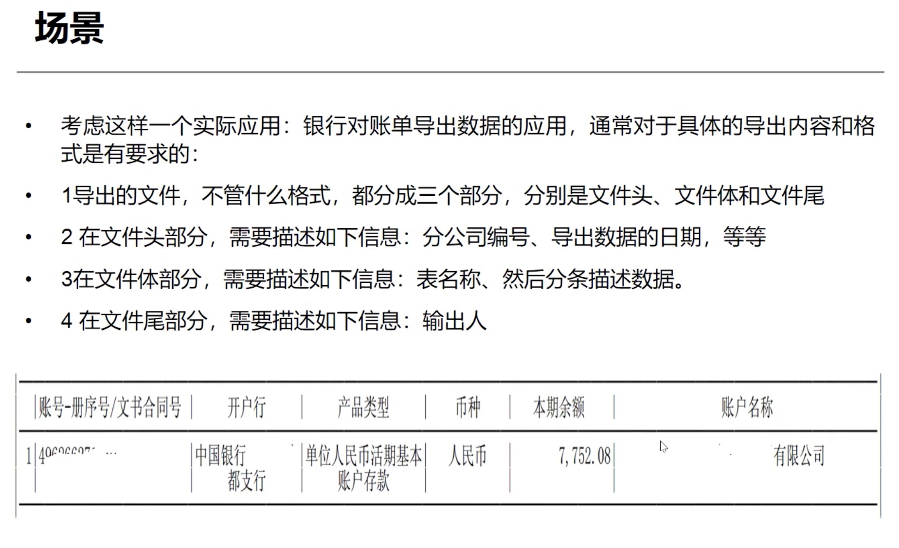

Builder
动机
-
在软件系统中，有时候面临着一个复杂对象的创建工作，其通常由各个部分的子对象用一定的算法构成；由于需求的变化，这个复杂对象的各个部分经常面临着剧烈的变化，但是将它们组合在一起的算法却相对稳定。
-
如何应对这种变化？如何提供一种封装机制”来隔离出“复杂对象的各个部分“的变化，从而保持系统中的“稳定构建算法”不随着需求改变而改变？
模式定义
- 将一个复杂对象的构建与其表示相分离，使得同样的构建过程（稳定）可以创建不同的表示（变化）
结构

要点总结
-
Builder 模式主要用于“分步骤构建一个复杂的对象”。在这其中“分步骤“是一个稳定的算法，而复杂对象的各个部分则经常变化
-
变化点在哪里，封装哪里- Builder 模式主要在于应对“复杂对象各个部分”的频繁需求变动。其缺点在于难以应对“分步骤构建算法”的需求变动。
和其他模式区别
- factory模式关注的是整个产品整体对象的产生，成品的生成。builder模式关注的产品的创建过程和细节，一步一步的由各个子部件构建成一个成品
- composite 关注的对象内部的组成结构，强调的是部分与整体的关系，builder模式关注的是对象的创建过程，由一个一个的子部件构建一个成品的过程
模式的功能
- 生成器模式的主要功能是构建复杂的产品，而且是细化的，分步骤的构建产品，也就是生成器模式重在解决一歩一步构造复杂对象的问题。这个枃建的过程是统一的，固定不变的，变化的部分放到生成器部分了，只要配置不同的生成器，那么同样的构建过程，就能构建出不同的产品表示来。
- 分离构建算法和具体的构造实现, 从而使得构建算法可以重用，具体的构造实现可以很方便的扩展和切換，从而可以灵活的组合来构造出不同的产品对象。
重要的组成部分
-
(1) 一个部分是 Builder 接口这边，这边是义了如何枃建各个部件，也就是知道每个部件功能如何实现，以及如何装配这些部件到产品中去
-
(2) 另外一个部分是 Directo 这边，Director是知道如何组合来构建产品，也就是说 Director 负责整体的构建算法，而且通常是分步骤的来执行。
使用场景
- 
cpp_demo
//
// Created by eredinliu on 2020-02-04.
//
#include <iostream>
#include <list>
#include <map>
using namespace std;
class IPart {
public:
IPart(const string& name) : name_(name) {}
string Name() {
return this->name_;
}
protected:
string name_;
};
class CPU : public IPart {
public:
CPU(const string& name) : IPart(name) {}
};
class MainBoard : public IPart {
public:
MainBoard(const string& name) : IPart(name) {}
};
class Ram : public IPart {
public:
Ram(const string& name) : IPart(name) {}
};
class VideoCard : public IPart {
public:
VideoCard(const string& name) : IPart(name) {}
};
class Computer {
public:
Computer(const string& name, map<string, IPart*> components)
: name_(name), components_(components) {}
string Name() {
return this->name_;
}
virtual void Feature() = 0;
protected:
string name_;
map<string, IPart*> components_;
};
class MacBook : public Computer {
public:
MacBook(const string& name, map<string, IPart*> components)
: Computer(name, components) {}
void Feature() {
cout << "I'm MacBook computer " << this->name_ << endl;
}
};
class ThinkPad : public Computer {
public:
ThinkPad(const string& name, map<string, IPart*> components)
: Computer(name, components) {}
void Feature() {
cout << "I'm ThinkPad computer " << this->name_ << endl;
}
};
class IBuilder {
public:
virtual void BuildCpu() = 0;
virtual void BuildMainBoard() = 0;
virtual void BuildRam() = 0;
virtual void BuildVideoCard() = 0;
Computer* GetResult() {
return this->computer;
}
IBuilder(Computer* com) : computer(com) {}
protected:
Computer* computer;
};
class MacBookBuilder : public IBuilder {
public:
MacBookBuilder(Computer* com) : IBuilder(com) {}
void BuildCpu() {
cout << typeid(this).name() << " BuildCPU" <<endl;
}
void BuildMainBoard() {
cout << typeid(this).name() << " BuildMainBoard" <<endl;
}
void BuildRam() {
cout << typeid(this).name() << " BuildRam" <<endl;
}
void BuildVideoCard() {
cout << typeid(this).name() << " BuildVideoCard" <<endl;
}
};
class ThinkPadBuilder : public IBuilder {
public:
ThinkPadBuilder(Computer* com) : IBuilder(com) {}
void BuildCpu() {
cout << typeid(this).name() << " BuildCPU" <<endl;
}
void BuildMainBoard() {
cout << typeid(this).name() << " BuildMainBoard" <<endl;
}
void BuildRam() {
cout << typeid(this).name() << " BuildRam" <<endl;
}
void BuildVideoCard() {
cout << typeid(this).name() << " BuildVideoCard" <<endl;
}
};
class Director {
public:
void Create(IBuilder* builder) {
builder->BuildCpu();
builder->BuildMainBoard();
builder->BuildRam();
builder->BuildVideoCard();
}
};
int main() {
map<string, IPart*> components;
components["cpu"] = new CPU("i5-6200u");
components["board"] = new MainBoard("Intel DH5700D");
components["ram"] = new Ram("DDR4");
components["card"] = new VideoCard("NVIDIA Geforce 920MAX");
Computer* think_pad = new ThinkPad("think_pad", components);
IBuilder* builder = new ThinkPadBuilder(think_pad);
Director* director = new Director();
director->Create(builder);
Computer* c1 = builder->GetResult();
c1->Feature();
}
golang_demo
package desian_pattern_practise
import "reflect"
type IComputer interface {
Feature()
}
type IPart interface {
Name() string
}
type ICPU struct {
name string
}
func (i *ICPU) Name() string {
return "CPU"
}
type IMainBoards struct {
name string
}
func (i *IMainBoards) Name() string {
return "MainBoards"
}
type Ram struct {
name string
}
func (i *Ram) Name() string {
return "Ram"
}
type IVideoCard struct {
name string
}
func (i *IVideoCard) Name() string {
return "VideoCard"
}
type Computer struct {
name string
components map[string]IPart
}
func (c *Computer) Name() string {
return c.name
}
type ThinkPad struct {
*Computer
}
func (t *ThinkPad) Feature() {
println("I'm ThinkPad computer ", t.name)
}
type MacBook struct {
*Computer
}
func (m *MacBook) Feature() {
println("I'm MacBook computer ", m.name)
}
type CBuilder interface {
BuildCpu()
BuildMainBoard()
BuildRam()
BuildVideoCard()
GetResult() IComputer
}
type MacBookBuilder struct {
computer IComputer
}
func NewMacBookBuilder(components map[string]IPart) *MacBookBuilder {
return &MacBookBuilder{
computer: &MacBook{
Computer: &Computer{
name: "MacBook",
components: components,
},
},
}
}
func (t *MacBookBuilder) BuildCpu() {
println(reflect.TypeOf(t).String() + " BuildCpu")
}
func (t *MacBookBuilder) BuildMainBoard() {
println(reflect.TypeOf(t).String() + " BuildMainBoard")
}
func (t *MacBookBuilder) BuildRam() {
println(reflect.TypeOf(t).String() + " BuildRam")
}
func (t *MacBookBuilder) BuildVideoCard() {
println(reflect.TypeOf(t).String() + " BuildVideoCard")
}
func (t *MacBookBuilder) GetResult() IComputer {
return t.computer
}
func NewThinkPadBuilder(components map[string]IPart) *ThinkPadBuilder {
return &ThinkPadBuilder{
computer: &ThinkPad{
Computer: &Computer{
name: "ThinkPad",
components: components,
},
},
}
}
type ThinkPadBuilder struct {
computer IComputer
}
func (t *ThinkPadBuilder) BuildCpu() {
println(reflect.TypeOf(t).String() + " BuildCpu")
}
func (t *ThinkPadBuilder) BuildMainBoard() {
println(reflect.TypeOf(t).String() + " BuildMainBoard")
}
func (t *ThinkPadBuilder) BuildRam() {
println(reflect.TypeOf(t).String() + " BuildRam")
}
func (t *ThinkPadBuilder) BuildVideoCard() {
println(reflect.TypeOf(t).String() + " BuildVideoCard")
}
func (t *ThinkPadBuilder) GetResult() IComputer {
return t.computer
}
type Director struct {}
func (d *Director) Create(builder CBuilder) {
builder.BuildCpu()
builder.BuildMainBoard()
builder.BuildRam()
builder.BuildVideoCard()
}
func TestComputer_Name(t *testing.T) {
components := make(map[string]IPart)
components["cpu"] = &ICPU{"i5-6200u"}
components["board"] = &IMainBoards{"Intel DH5700D"}
components["ram"] = &Ram{"DDR4"}
components["card"] = &IVideoCard{"NVIDIA Geforce 920MAX"}
thinkpad := NewThinkPadBuilder(components)
director := &Director{}
director.Create(thinkpad)
c1 := thinkpad.GetResult()
c1.Feature()
println(render.Render(c1))
components2 := make(map[string]IPart)
components2["cpu"] = &ICPU{"i7-8700H"}
components2["board"] = &IMainBoards{"ASUS TUF B450M-PRO GAMING"}
components2["ram"] = &Ram{"16 GB 2400 MHz DDR4"}
components2["card"] = &IVideoCard{"Radeon Pro 555X 4 GB"}
macbook := NewMacBookBuilder(components2)
director.Create(macbook)
c2 := macbook.GetResult()
c2.Feature()
println(render.Render(c2))
}
python_demo
from abc import ABCMeta, abstractmethod
class Toy(metaclass=ABCMeta):
def __init__(self, name):
self._name = name
self.__component = []
def get_name(self):
return self._name
def add_component(self, component):
self.__component.append(component)
@abstractmethod
def feature(self):
pass
class Car(Toy):
def feature(self):
print('Im {}, I can quickly run...'.format(self._name))
class Manor(Toy):
def feature(self):
print('Im {}, you can come and have fun ...'.format(self._name))
class ToyBuilder(metaclass=ABCMeta):
@abstractmethod
def build_product(self):
pass
class CarBuilder(ToyBuilder):
def build_product(self):
car = Car("mini_car")
print("mini_car is build")
car.add_component("wheel")
car.add_component("body")
car.add_component("motivator")
car.add_component("steer")
return car
class ManorBuilder(ToyBuilder):
def build_product(self):
manor = Manor("mini_car")
print("manor is build")
manor.add_component("guardroom")
manor.add_component("bedroom")
manor.add_component("study")
manor.add_component("kitchen")
return manor
class BuilderMgr(object):
def __init__(self):
self.__car_builder = CarBuilder()
self.__manor_builder = ManorBuilder()
def build_car(self, num):
products = []
count = 0
while count < num:
car = self.__car_builder.build_product()
products.append(car)
count += 1
print('build {} car name {}'.format(count, car.get_name()))
return products
def build_manor(self, num):
products = []
count = 0
while count < num:
manor = self.__manor_builder.build_product()
products.append(manor)
count += 1
print('build {} manor name {}'.format(count, manor.get_name()))
return products
if __name__ == '__main__':
build_mgr = BuilderMgr()
build_mgr.build_car(2)
build_mgr.build_manor(4)
python_demo2
from abc import ABCMeta, abstractmethod
class IBuilder(metaclass=ABCMeta):
@abstractmethod
def BuildCpu(self):
pass
@abstractmethod
def BuildMainBoard(self):
pass
@abstractmethod
def BuildRam(self):
pass
@abstractmethod
def BuildVideoCard(self):
pass
@abstractmethod
def GetResult(self):
pass
class Director(object):
def create(self, builder):
builder.BuildCpu()
builder.BuildMainBoard()
builder.BuildRam()
builder.BuildVideoCard()
class Computer(object):
def __init__(self):
self.cpu, self.m_board, self.ram, self.video_card = '','','',''
def __str__(self):
return "cpu {} board {} ram {} video_card {}".format(self.cpu,
self.m_board,
self.ram,
self.video_card)
class MacBuilder(IBuilder):
def __init__(self):
self.computer = Computer()
def BuildCpu(self):
self.computer.cpu = "I7-8897H"
def BuildMainBoard(self):
self.computer.m_board = "ASUS-1919"
def BuildRam(self):
self.computer.ram = "16 GB 2400 MHz DDR4"
def BuildVideoCard(self):
self.computer.video_card = "Radeon Pro 555X 4 GB"
def GetResult(self):
return self.computer
class SurfaceBuilder(IBuilder):
def __init__(self):
self.computer = Computer()
def BuildCpu(self):
self.computer.cpu = "I5-8897U"
def BuildMainBoard(self):
self.computer.m_board = "Intel-1919"
def BuildRam(self):
self.computer.ram = "Kingston 32 GB 3200 MHz DDR4"
def BuildVideoCard(self):
self.computer.video_card = "Iris Plus i5"
def GetResult(self):
return self.computer
if __name__ == '__main__':
d = Director()
b1 = MacBuilder()
d.create(b1)
b2 = SurfaceBuilder()
d.create(b2)
print(b1.GetResult())
print(b2.GetResult())
导出格式
#include <iostream>
#include <vector>
using namespace std;
class ExportHeaderModel
{
public:
ExportHeaderModel() {}
};
class ExportDataModel
{
public:
ExportDataModel() {}
};
class ExportFootModel
{
public:
ExportFootModel() {}
};
class Builder
{
public:
virtual void buildHeader(ExportHeaderModel &e) = 0;
virtual void buildData(ExportDataModel &e) = 0;
virtual void buildFoot(ExportFootModel &e) = 0;
protected:
Builder() {}
};
class TxtBuilder : public Builder
{
public:
void buildHeader(ExportHeaderModel &e)
{
cout << typeid(e).name() << __func__ << endl;
}
void buildData(ExportDataModel &e)
{
cout << typeid(e).name() << __func__ << endl;
}
void buildFoot(ExportFootModel &e)
{
cout << typeid(e).name() << __func__ << endl;
}
};
class XMLBuilder : public Builder
{
public:
void buildHeader(ExportHeaderModel &e)
{
cout << typeid(e).name() << __func__ << endl;
}
void buildData(ExportDataModel &e)
{
cout << typeid(e).name() << __func__ << endl;
}
void buildFoot(ExportFootModel &e)
{
cout << typeid(e).name() << __func__ << endl;
}
};
class Director {
public:
Director(Builder* builder) : builder_(builder) {}
void construct(ExportHeaderModel& head, ExportDataModel& data,
ExportFootModel& foot) {
builder_->buildHeader(head);
builder_->buildData(data);
builder_->buildFoot(foot);
}
private:
Builder* builder_;
};
int main() {
Builder* builder = new XMLBuilder();
Director* d = new Director(builder);
ExportHeaderModel head;
ExportDataModel data;
ExportFootModel foot;
d->construct(head, data, foot);
}